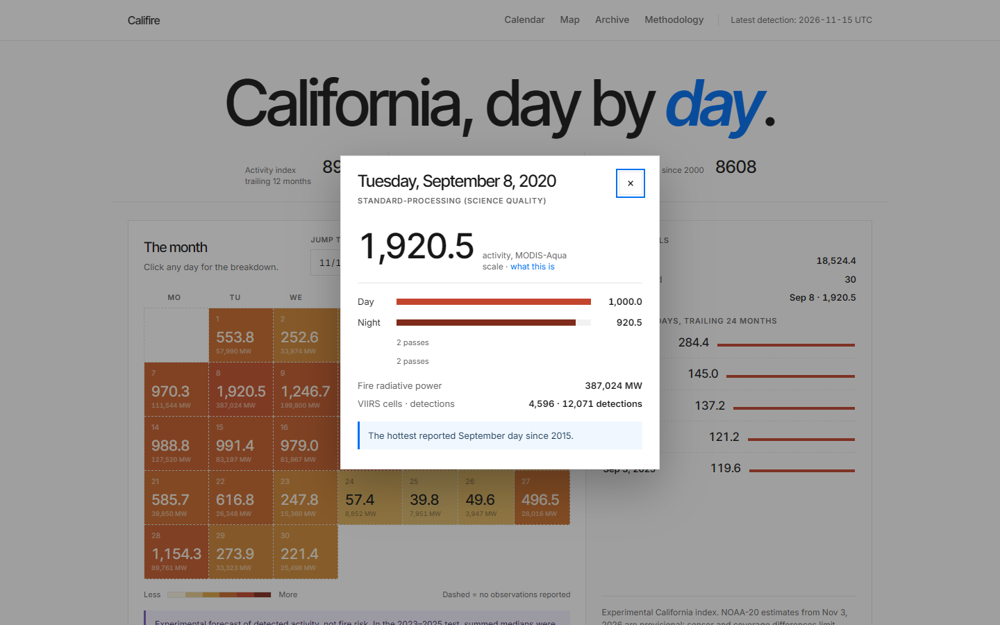
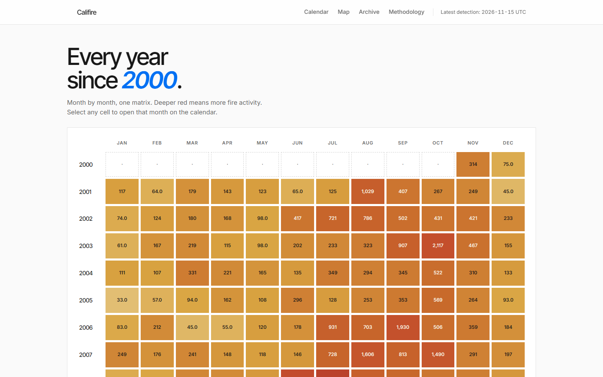
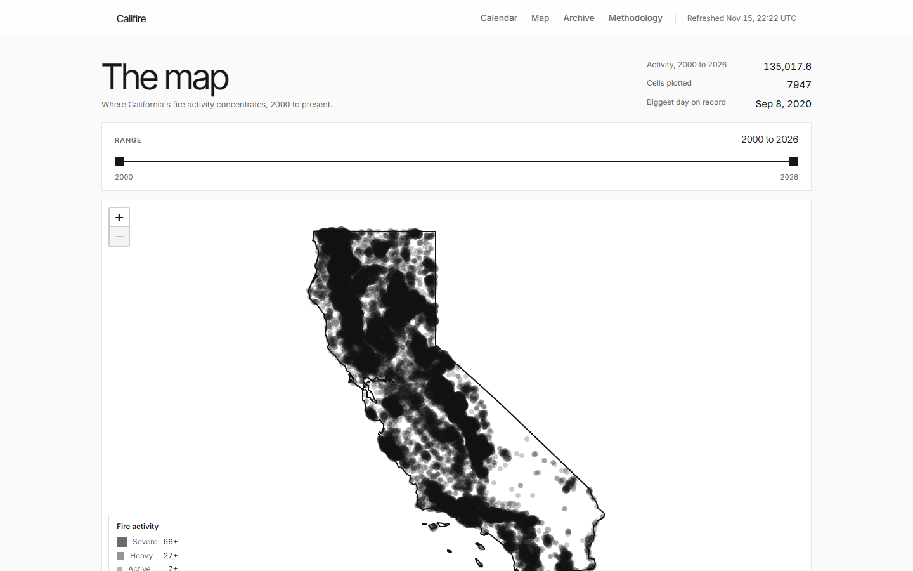

A satellite fire-activity calendar for exploring California's past and present.

MODIS and VIIRS observe at different resolutions, sensitivities and times. Raw detections cannot simply be compared as one continuous record.
Sensor and coverage differences remain.
NASA FIRMS hotspots are filtered to California and grouped into satellite passes.
Open any reported day to inspect the activity index, radiative power and day/night observations.
Compare months across the archive, then explore where the reported activity is concentrated on the map.

An experimental activity index—not burned area, a fire count, a forecast or an emergency alert.
